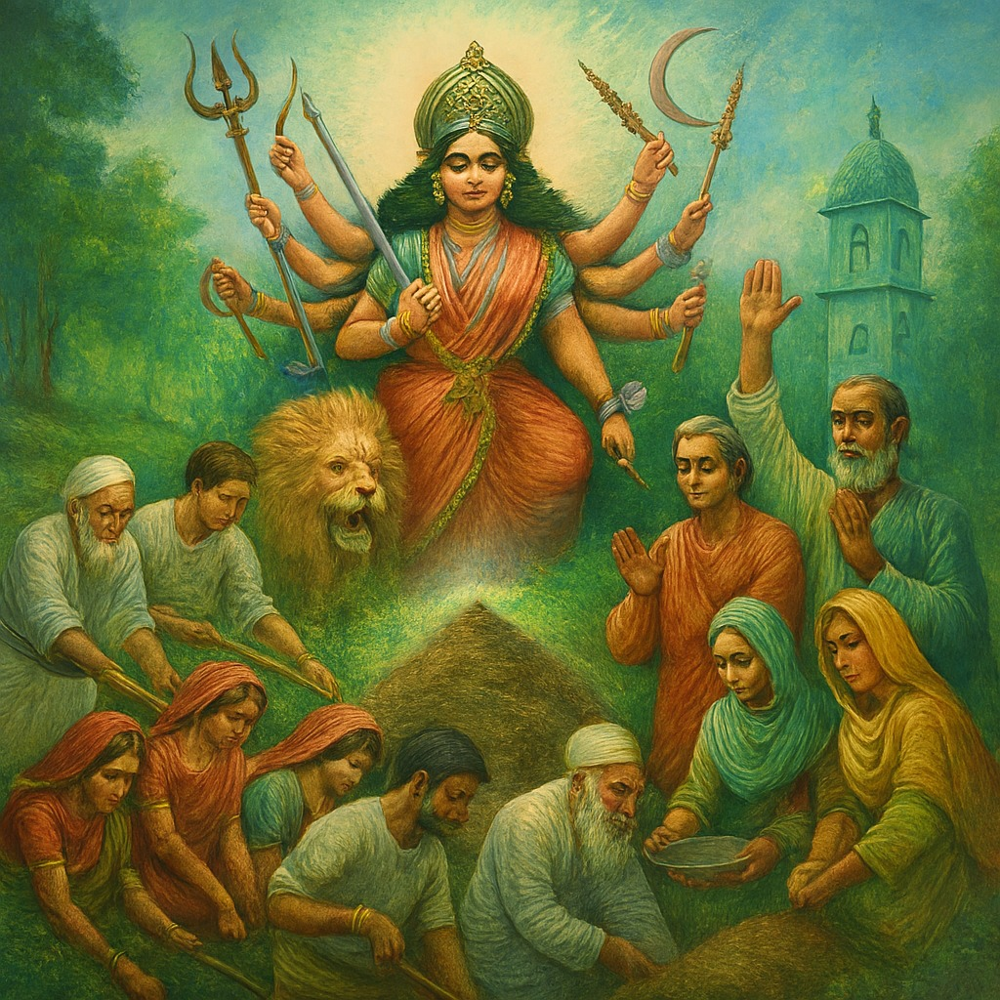

শক্তির আরাধনা: ধর্ম ভেদের গণ্ডি ছাড়িয়ে
মানুষ বিভেদের প্রাচীর তোলে, কিন্তু সেই প্রাচীর ভাঙতে পারে একতা আর শক্তির জাগরণ। শান্তিপুর গ্রামের ইতিহাস সেই সত্যেরই প্রতিফলন। গ্রামটির এক প্রান্তে ছিল হিন্দু সমাজ, অন্য প্রান্তে মুসলমান সমাজ। উৎসবের দিনে আনন্দ আলাদা হতো, দূরত্বও থাকত। দুর্গাপুজোর কোলাহল হিন্দুদের প্রাঙ্গণে সীমাবদ্ধ থাকত, আর ঈদের আনন্দ মুসলিম সমাজেই সীমিত। যেন অদৃশ্য এক দেয়াল দুই সম্প্রদায়কে আলাদা করে রেখেছিল।
কিন্তু প্রকৃতি কখনো সেই দেয়াল মানে না। ভরা বর্ষায় নদী ফুলে ওঠে, ভাঙন নামে, আর মানুষের বাঁচা-মরার প্রশ্ন এসে দাঁড়ায়। এক ভয়াবহ বর্ষায় নদীর ভাঙনে মন্দির ও মসজিদ উভয়ই বিপন্ন হয়ে পড়ল। ঘরবাড়ি ভেসে গেল, জমি হারাল মানুষ, আর গ্রামটি যেন নদীর অতলে মিলিয়ে যাওয়ার মুখে দাঁড়িয়ে রইল। তখন মানুষ উপলব্ধি করল—এ লড়াই ধর্মের নয়, এ লড়াই অস্তিত্বের।
সেই মুহূর্তেই জন্ম নিল এক নতুন শক্তির। হিন্দু-মুসলমান নির্বিশেষে সবাই একত্র হলো। কেউ মাটি কেটে বাঁধ তুলল, কেউ বাঁশ কেটে বাঁধ শক্ত করল, কেউ আবার রান্না করে শ্রমিকদের খাবার দিল। হিন্দু মহিলারা প্রসাদ রান্না করে আনল, মুসলিম মহিলারা রুটি আর খিচুড়ি রেঁধে দিল। কর্মের ভেতর মিশে গেল হৃদয়ের ঐক্য।
গ্রামের প্রবীণ আব্দুল চাচা দাঁড়িয়ে বললেন—“আজ আল্লাহ আমাদের শিখিয়েছেন, শক্তি তখনই জাগে যখন মানুষ এক হয়।” তার পাশে দাঁড়িয়ে পুরোহিত হরিদাস শান্তস্বরে যোগ করলেন—“আজ বুঝলাম, মা দুর্গা কেবল প্রতিমায় নন, তিনি জাগ্রত আছেন আমাদের ঐক্যে, আমাদের সাহসে, আমাদের সহমর্মিতায়।”
আসলে মা দুর্গা হলেন মহাশক্তির প্রতিমূর্তি। তিনি অশুভকে বিনাশ করে শুভের প্রতিষ্ঠা করেন। তাঁর দশভুজে বহন করা অস্ত্র কেবল দেবদেবীর শক্তি নয়, সেটি সম্মিলিত ঐক্যের প্রতীক। শাস্ত্রে আছে, দেবতারা একা একা যখন অসহায় হয়ে পড়েছিলেন, তখন তাঁরা নিজেদের শক্তি মিলিয়ে দুর্গার সৃষ্টি করেছিলেন। সেই দুর্গা জন্মেছিলেন সম্মিলিত শক্তি থেকে। শান্তিপুরের মানুষও সেই শিক্ষাই পেল—ধর্মের গণ্ডি ভেঙে, একত্রে দাঁড়ালেই জাগে প্রকৃত মাতৃশক্তি।
অবশেষে বাঁধ তৈরি হলো, নদীর ভাঙন থামল, গ্রাম রক্ষা পেল। কিন্তু সবচেয়ে বড় রক্ষা হলো মানুষের হৃদয়ের। সেই অদৃশ্য প্রাচীর ভেঙে গেল। তারপর থেকে শান্তিপুরে নতুন প্রথার সূচনা হলো। দুর্গাপুজোর রাতে মুসলিম পরিবারও প্রদীপ জ্বালায়, আবার ঈদের দিনে হিন্দু পরিবার মিষ্টি বিলায়। উৎসব আর কেবল ধর্মীয় অনুষ্ঠান রইল না, হয়ে উঠল মানুষের মিলনের প্রতীক, হয়ে উঠল মাতৃশক্তির প্রকৃত আরাধনা।
মা দুর্গা প্রতিদিনই জন্ম নেন মানুষের সাহসে, ঐক্যে ও সহমর্মিতায়। তিনি কেবল প্রতিমায় নন, তিনি জাগ্রত আছেন মানুষের ভেতরে, যেখানে বিভেদ ভেঙে মিলন ঘটে। তাই ধর্ম ভেদের গণ্ডি ছাড়িয়ে শক্তির আরাধনা মানে হলো—মানুষে মানুষে ঐক্যের শক্তিকে জাগিয়ে তোলা, অশুভ শক্তির বিরুদ্ধে শুভ শক্তির জয় ঘোষণা করা। এই শিক্ষা শুধু শান্তিপুরের নয়,
মানবসভ্যতার চিরন্তন বার্তা।